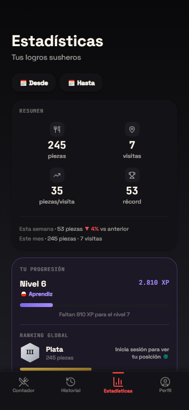
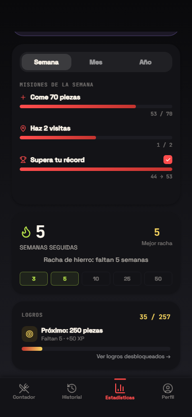

No es solo contar.
Tres experiencias, una sola app: contar, superar y competir.
Cuenta
Suma pieza a pieza o usa los accesos rápidos +5 y +10. Cada toque tiene su propia animación.
Supera
Récords personales, más de 50 logros desbloqueables y un dato distinto sobre tu sushi cada vez que abres la app.
Compite
Ranking global en tiempo real, de Hierro a Sushi God. Demuestra quién es el verdadero itamae.
Una noche de sushi, paso a paso.
Elige un plan y mira cómo funciona Sushimetro, desde que te sientas hasta que compartes el resultado.
- 21:00Abres el contador
Sushimetro arranca directamente en él. Cada uno, en su móvil.
- 21:05Un toque por pieza
Si llega una bandeja entera, +5, +10 o +15. Si te equivocas, −1.
- 22:30Finalizas la visita
«¿Registrar 34 piezas de sushi?» Confirmas y queda guardada con fecha y hora.
- 22:30Tarjeta de resultado
Tus piezas, tu rango y tu total, en una imagen.
- 22:31La compartís en el grupo
Cada uno manda la suya y se ve quién ha ganado.
- DespuésRanking global
Si entras con tu cuenta de Google, tus piezas suben al ranking.
Cada uno cuenta lo suyo y, al terminar, la tarjeta de resultado zanja la discusión.
- 14:00Abres el contador
Sin registrarte: como invitado, todo se guarda en el móvil.
- 14:05Un toque por pieza
Mientras comes, sin estar pendiente de la cuenta.
- 14:40Finalizas la visita
18 piezas, guardadas en tu historial con fecha y hora.
- 14:40Tu media, al día
El historial recalcula cuántas piezas comes por visita.
- Esta semanaMisiones y racha
«Haz 2 visitas» pasa a 1/2 y tu racha semanal sigue viva.
- Cuando quierasInicias sesión con Google
Lo que guardaste como invitado se sube a la nube.
Una comida rápida también cuenta: suma a tu media, a tus misiones y a tu racha.
- 21:00Tu récord: 41 piezas
Esta semana tienes activa la misión «Supera tu récord».
- 21:05Un toque por pieza
Con +5, +10 y +15 cuando llegan las bandejas.
- 22:45Finalizas la visita
«¿Registrar 45 piezas de sushi?» Confirmas.
- 22:45Nuevo récord personal
La tarjeta lo celebra y recuerda tu récord anterior.
- 22:45XP extra y misión cumplida
El récord suma 100 XP para tu nivel, además de la misión.
- 22:45Logro desbloqueado
Si tu total cruza uno de los hitos de piezas, se desbloquea uno nuevo.
Batir tu marca queda en la tarjeta, cumple la misión de la semana y te da XP extra.
Sube de rango
Cada pieza suma para tu rango global. Diez niveles, de Hierro a Sushi God.
Tu rango dice cuánto comes. Tu nivel dice cuánto juegas.
100 niveles y 10 títulos por XP: sesiones, récords, constancia y variedad — no solo piezas.
Tus misiones de esta semana
Se renuevan cada semana (y también hay misiones mensuales y anuales). El objetivo de piezas se adapta a tu media, no es un número fijo para todos.
Objetivo dinámico según tu media de las últimas semanas.
+75–250 XPRegistra sushi al menos dos veces esta semana.
+75 XPAparece en cuanto tienes una marca propia que batir.
¿Quién come más?
El ranking se actualiza con cada ingesta guardada. Encuentra tu fila.
Mira lo que has comido
Contador, estadísticas y logros con datos reales de usuarios.


¿Sabías que...?
Tu próximo récord empieza con una pieza.
Sushimetro está en beta en Google Play. Entrar es gratis y se hace en un minuto: tres pasos y a contar.
-
1
Únete al grupo de testers
Es lo que te da acceso a la beta. Entra y pulsa «Unirse al grupo».
Unirme al grupo -
2
Acepta la invitación
Pulsa «Convertirme en tester». Si te dice que no tienes acceso, espera un par de minutos: el grupo tarda un poco en activarse.
Aceptar invitación -
3
Instala desde Google Play
Ya puedes descargarla como cualquier otra app, y las actualizaciones te llegarán solas.
Instalar Sushimetro
¿Instalaste antes el APK de esta web? Desinstálalo y entra por aquí para recibir las actualizaciones. Si usabas la app con tu cuenta de Google, no pierdes nada: tus datos están en la nube.
Sobre el contador
Cómo funciona Sushimetro en el buffet libre, en el móvil y con tu cuenta.
¿Qué es Sushimetro?
Sushimetro es un contador de sushi gratis para Android. Anotas las piezas de cada visita, desbloqueas logros y compites en un ranking global.
¿Sirve para contar un buffet libre?
Sí. Está pensado para el buffet libre y también para cualquier comida de sushi: sumas las piezas de esa visita y quedan en tu historial.
¿Sushimetro es gratis?
Sí, la app es gratis. Está en beta en Google Play: te unes al grupo de testers, aceptas la invitación e instalas desde Play. La cuenta de Google del móvil y la del grupo tienen que ser la misma.
¿Cómo se anotan las piezas?
De una en una, o de cinco y de diez con los accesos rápidos. Cada toque suma al total de la visita.
¿Cómo se sube de rango?
El rango, de Hierro a Sushi God, depende de las piezas que acumulas. El nivel, hasta 100, depende de la experiencia: sesiones, récords, constancia y variedad, no solo de las piezas.
¿Se guardan mis datos si cambio de móvil?
Si entras con tu cuenta de Google, el historial se sincroniza en la nube. Si instalaste antes el APK de esta web, desinstálalo y entra por Google Play para seguir recibiendo actualizaciones.
¿Cómo elimino mi cuenta y mis datos?
En la app, entra en Perfil y pulsa Eliminar mi cuenta. Si ya no la tienes instalada, usa la página de eliminación de cuenta o escribe a hola@jagcweb.es. Se borran sesiones, estadísticas, logros y tu puesto en el ranking.